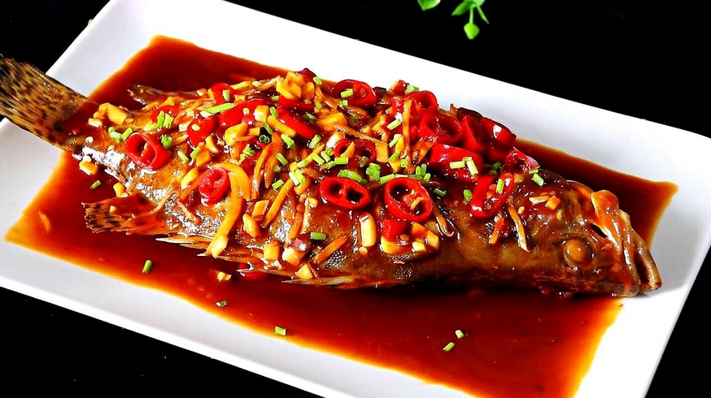
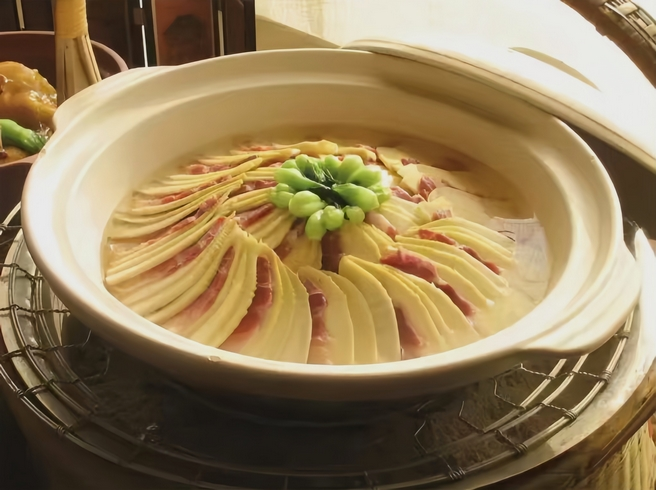
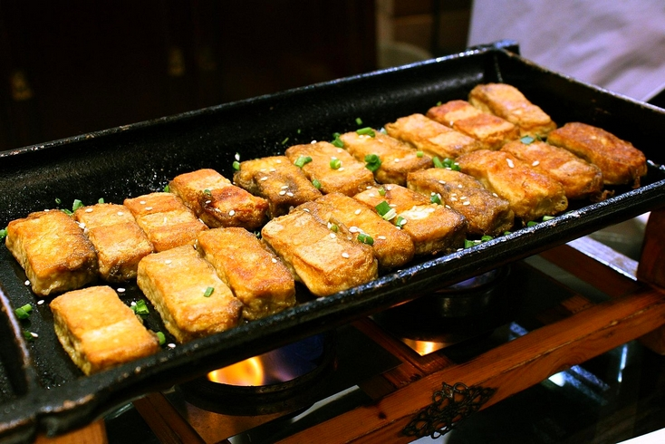

Située dans l'est de la Chine, la province de l'Anhui présente une diversité topographique marquée, influençant directement sa gastronomie. Le nord, plat et densément peuplé, fait partie de la plaine de Chine du Nord et du bassin de la rivière Huai. En revanche, le sud est caractérisé par un relief plus accidenté. Ces montagnes abritent une riche biodiversité, notamment une grande variété de plantes sauvages, champignons et herbes aromatiques, qui constituent des ingrédients clés de la cuisine locale.
Le fleuve Yangzi traverse le sud de la province, apportant des ressources aquatiques essentielles à la gastronomie de l'Anhui. Le lac Chaohu, situé au centre de la province, est l’un des plus grands de Chine et constitue une importante source de poissons et fruits de mer d’eau douce.
Le climat subtropical humide de l'Anhui varie du nord au sud. Le nord connaît des saisons bien marquées avec des hivers froids et des étés chauds, tandis que le sud bénéficie d’un climat plus doux et humide.
L’histoire de la cuisine de l’Anhui remonte à la dynastie Song (960-1279). Son berceau se trouve dans l’ancienne région de Huizhou, située dans le sud de la province de l’Anhui. Les banquets organisés après les cérémonies de culte étaient alors une pratique courante et sont souvent considérés comme l’origine de la cuisine Hui.
L’âge d’or de la cuisine Hui correspond à la période où les marchands de Huizhou dominaient le commerce en Chine. Ces derniers ont largement contribué à la diffusion et au développement de cette tradition culinaire. Avec leur essor sous les dynasties Ming et Qing, la cuisine de Huizhou s’est progressivement imposée et s’est répandue dans les provinces du Jiangsu, du Zhejiang, du Jiangxi, du Fujian, ainsi qu'à Shanghai, au Hubei et dans les régions situées sur les rives du Yangzi, exerçant une influence considérable. À son apogée, elle était même considérée comme la plus prestigieuse des huit grandes cuisines chinoises sous les Ming et les Qing.
La cuisine de l'Anhui se caractérise par une volonté de préserver la texture et l'apparence naturelles des ingrédients utilisés.
Elle se distingue également par une utilisation plus abondante d'huile par rapport à d'autres cuisines chinoises. L'huile de colza, dérivée du colza cultivé localement, est particulièrement courante.
Le jambon occupe également une place centrale dans la cuisine de l’Anhui, non seulement en tant qu’ingrédient principal, mais aussi comme condiment, une particularité qui distingue cette gastronomie.
Par ailleurs, les plats de l’Anhui sont réputés pour leurs bienfaits nutritifs et propriétés médicinales.
Les saveurs prédominantes dans la cuisine de l'Anhui sont salées, fraîches, subtiles et authentiques.
Le climat agréable, l'abondance de rivières et de lacs, ainsi que les collines verdoyantes de l’ancienne région de Huizhou offrent à la cuisine de l’Anhui une richesse exceptionnelle en ingrédients sauvages. Parmi eux, on trouve des perdrix, des grenouilles, des poissons, des volailles, ainsi que des champignons frais, des pousses de bambou, des châtaignes, des ignames et bien d’autres produits issus de la nature.
Les principales techniques de cuisson de la cuisine Hui sont le braisage et la cuisson à la vapeur, tandis que la friture sont moins courantes.
Le braisage, en particulier, nécessite un contrôle précis de la chaleur. La gestion de la température est essentielle dans la cuisine Hui. En fonction des caractéristiques spécifiques des ingrédients et des saveurs recherchées, différentes durées et intensités de chaleur sont appliquées. De plus, divers matériaux sont utilisés comme combustible pour la cuisson, et ceux-ci peuvent varier en fonction de la méthode. Par exemple, du charbon est utilisé pour un mijotage lent, des fagots pour un braisage rapide et du bois de chauffage pour un braisage lent.
Le poisson mandarin puant est un plat emblématique de la cuisine de l'Anhui, connu pour son goût particulier et son odeur distincte, d'où son nom.
Ce plat est préparé à partir de perche qui est marinée dans une sauce fermentée, souvent à base de légumes, d'ail, de gingembre et de piments, avant d'être cuit à la vapeur ou sauté au wok. Cette marinade contribue à son goût prononcé et, comme le nom l'indique, à une odeur assez forte qui peut surprendre les non-initiés.
L’odeur caractéristique du plat est liée à la fermentation des ingrédients, donnant au poisson une saveur umami profonde, et à la combinaison des arômes piquants et salés. Malgré son odeur, les amateurs de cuisine apprécient beaucoup ce plat, qui est considéré comme un délice régional. Le poisson est généralement servi entier, avec sa peau encore intacte, pour conserver toutes ses saveurs.

Les pousses de bambou de la montagne Wenzheng sont un autre plat célèbre. Il se compose de tranches de pousses de bambou fraîches, de champignons bruns et de saucisse rouge, créant ainsi une combinaison esthétique avec trois couleurs distinctes. Les pousses de bambou, d’une texture croquante, sont la base du plat, tandis que les champignons apportent une touche umami et les saucisses, une saveur riche et salée. Le tout est mijoté dans un bouillon puis sauté au wok.
C'est un plat raffiné, à la fois simple et délicat, particulièrement prisé au printemps autour de la montagne Huangshan.

Le tofu poilu est un plat unique et particulier de la cuisine de l'Anhui. Ce tofu est connu pour sa texture et son apparence distinctives, souvent étonnantes pour ceux qui n’y sont pas habitués.
Il s'agit d'un tofu fermenté recouvert d'un duvet de moisissure blanche qui se forme naturellement pendant la fermentation. Ce processus lui confère une texture très particulière ainsi qu'un goût umami très prononcé et une légère amertume, qui le distingue des autres types de tofu.
Le tofu poilu est généralement frit pour obtenir une croûte dorée et croustillante, ce qui contraste agréablement avec son intérieur crémeux.
